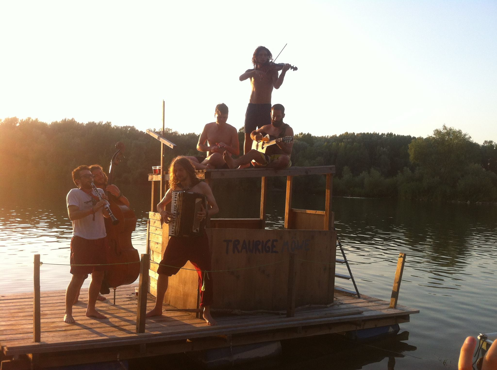
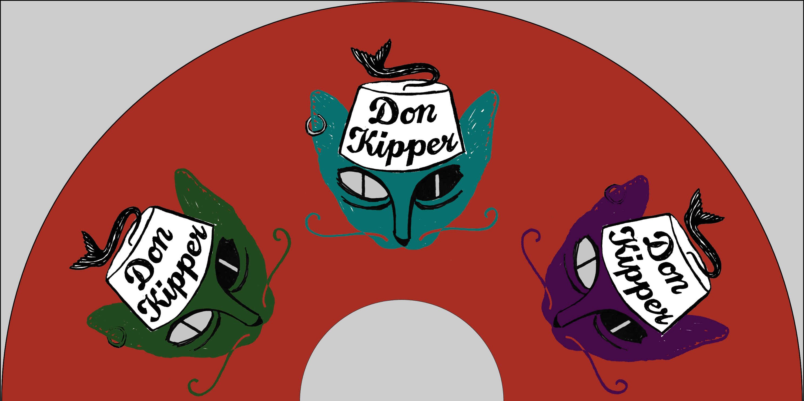
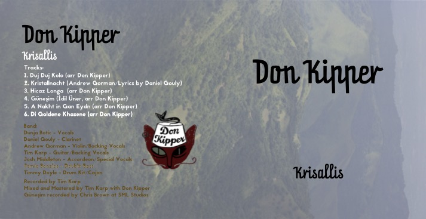

Having discovered a couple of heroic klezmorim, Tim Karp and Daniel Gouly at jam sessions during my masters studies I resolved to form a band to explore klezmer music and an array of related styles from which this rich genre draws influence. The goal was to put the music first, to come together regularly to play and arrange the music allowing our own experience to guide us toward original interpretations. After meeting a groove-mad Devonshire bassist, Jamie Benzies during my brief but highly educational season with London's finest Samba collective, "Rhythms of the City", our original 4-piece line up was complete. We played our first gig at a (pretty kitsch) Arabian-night-themed event at the swanky Dorchester hotel on Park Lane in London.
Soon thereafter Jamie brought his housemate (and by 'house' I mean amazing former pub right in the heart of the city) and partner-in-groove Tim Doyle in to play drums and thereby took Don Kipper to a new level of potential for combining exciting beats with our growing repertoire of melodies
After crashing his house party on my birthday in 2012 I found myself face to face with the inimitable accordionist, Josh Middleton whose bedroom already told the tale of a most singular minstrel destined for rare greatness. A few days later we were jamming in my bedroom and the deal was sealed. Don Kipper was now a sextet.
For nearly a year Don Kipper was largely an instrumental venture. Although we did love singing we often lacked the pronunciation skills for the relevant languages to our chosen styles. On the lookout for a fitting singer we trialed many an exciting vocalist but somehow things never clicked. That was until one balmy night at the legendary Jamboree venue down cable street ways. The gem of the Limehouse basin. That evening during our break between sets I felt a magnetic force drawing me towards a young man and a shy-looking lady. Greek? And Serbian? Knows all our music and loves to sing?! Could there ever have been a clearer candidate for sitting in on a rehearsal? That was Wednesday evening. By Friday lunchtime Dunja Botic was the singer and seventh member of Don Kipper. By Sunday night it felt like she'd been in the band for years. We were finally complete.
Having produced, recorded and released their self-titled first album Don Kipper toured Europe performing in festivals and venues and gained international recogition winning a Klezmer competition in Munich in 2015. 
After a period of touring Don Kipper returned to the studio (otherwise known as Tim's bedroom) to record the Krisallis EP that featured some of their first fully-original material. 
In the summer of 2018 Kipper signed with Riverboat Records to produce their third album Seven Sisters,
a personal and intimate homage to the band's home in north-east London. 
In 2019 on the Croatian Island, Vis I parted ways with my first metaphorical baby, Don Kipper to concentrate on raising my first biological baby, Vincent in my new home, Vienna.